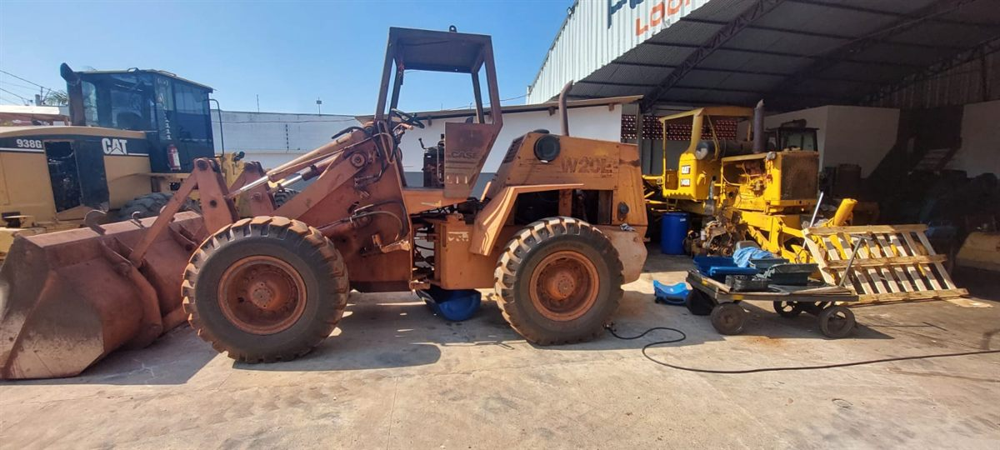
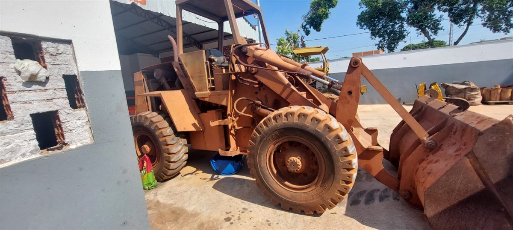
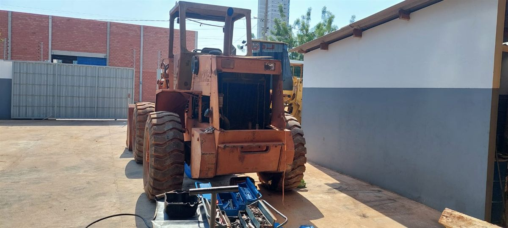
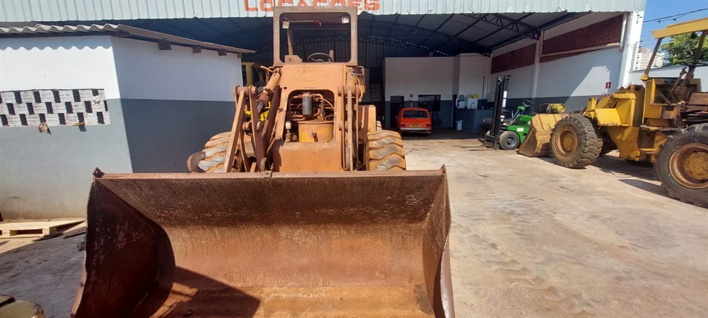
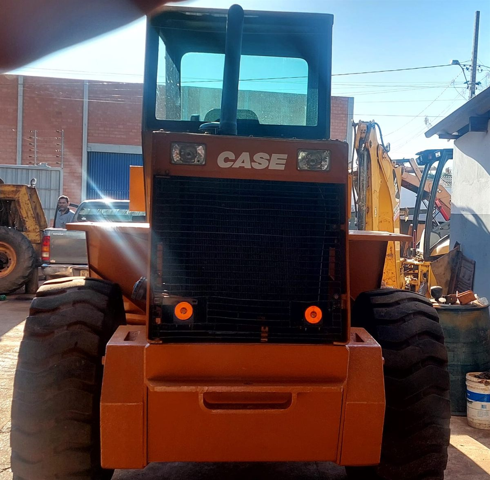
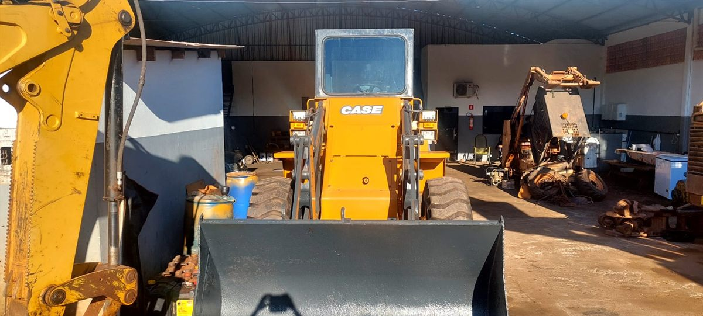
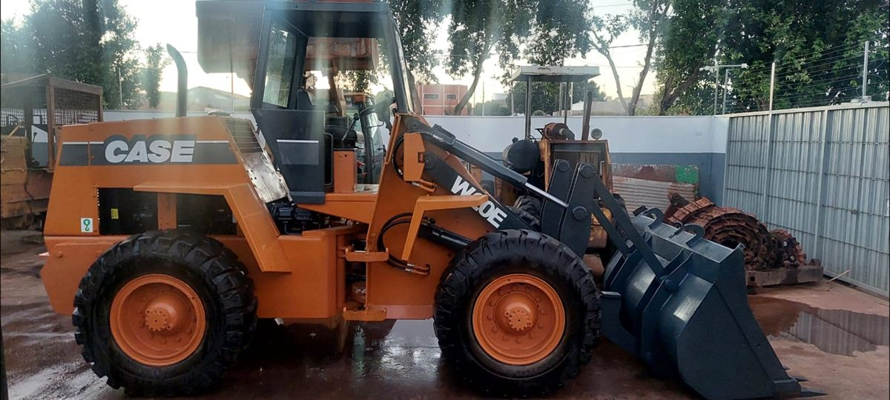

Antes e depois
WhatsApp
Antes e depois: reforma de pá carregadeira Case
Reforma completa em máquina pesada
A máquina chegou com desgaste avançado, pintura deteriorada, sinais de oxidação e necessidade de revisão geral. O serviço envolveu avaliação dos componentes, desmontagem, correções mecânicas, preparação da estrutura, pintura, acabamento e testes finais para entrega.
- Reforma completa
- Revisão mecânica
- Preparação e pintura
- Acabamento final
- Testes antes da entrega







